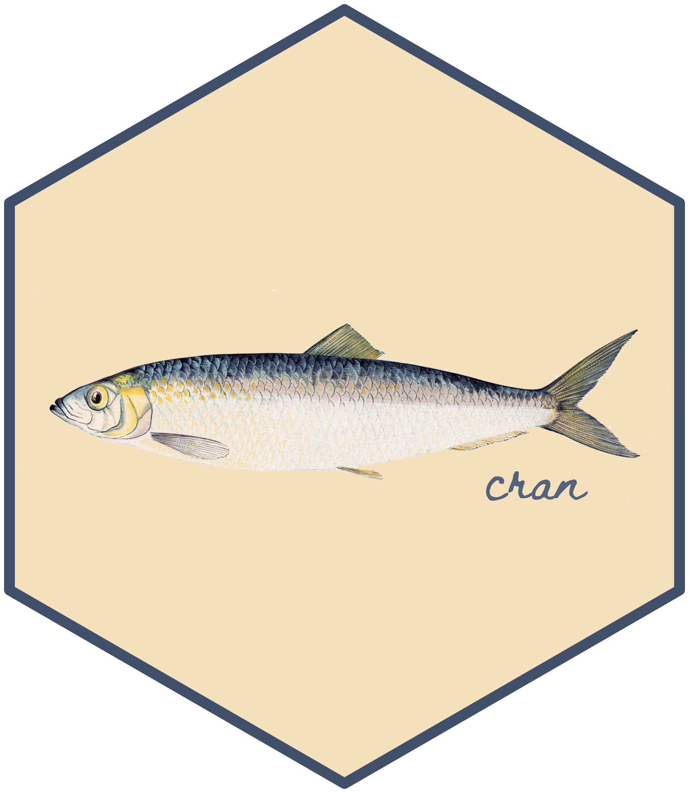
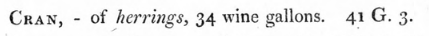

# install.packages("units") # install if you haven't already
library(units)udunits database from /Library/Frameworks/R.framework/Versions/4.3-arm64/Resources/library/units/share/udunits/udunits2.xmlSeptember 12, 2020

I made the tiny R package {cran} to convert volumes to an antiquated measurement of fish. Why? To test out the {units} package and to resolve a joke about the Comprehensive R Archive Network (CRAN).
The {units} package by Edzer Pebesma, Thomas Mailund and James Hiebert (site, source, R Journal) helps you set and create units, convert between them and raise an error where that isn’t possible.
I’ve used the package to solve a trivial unit conversion question and to create my own units. This post shows how.
Here’s a really simple example of the {units} package in action.
A colleague bought a 1 gallon water bottle, only to realise later that it was US gallons rather than UK gallons (viva litres!). What’s the relationship between the two gallon units?
First install and attach the {units} package, which is available on CRAN. It will print the location where the units dataset is stored. These units are derived from the comprehensive UNIDATA udunits database, which has all the relevant SI units and some that are a little more… nonstandard.
udunits database from /Library/Frameworks/R.framework/Versions/4.3-arm64/Resources/library/units/share/udunits/udunits2.xmlI’ll also load a few other packages for the purposes of this post.
You can inspect the valid_units() dataframe to find out what units you can work with. Here’s five random units from the dataframe:
valid_udunits() %>%
filter(symbol != "" & name_singular != "") %>%
sample_n(5) %>%
select(symbol, name_singular, definition)# A tibble: 5 × 3
symbol name_singular definition
<chr> <chr> <chr>
1 H henry unit of inductance; where a circuit's current chang…
2 L liter unit of capacity equal to 1000 cubic centimeters
3 in international_inch unit of length equal to 25.4 mm by definition, used…
4 °F fahrenheit unit of thermodynamic temperature
5 ' arc_minute measurement of a plane angle equal to 1/60 arc degr…We can filter the name_singular column to find the available gallon units.
# A tibble: 4 × 1
name_singular
<chr>
1 Canadian_liquid_gallon
2 US_dry_gallon
3 US_liquid_gallon
4 UK_liquid_gallon We’re interested in UK_liquid_gallon and US_liquid_gallon, but wow, there’s two more, including a ‘dry’ one.
We can supply a unit to a value with as_units(), so we can create 1 UK gallon with the following:
That gives us an object with class units and the print method adds the unit in square brackets:
We can also do maths with these objects:
And to convert it, we can take set the units of our unit-class object and specify a different unit. The units need to be compatible though, so you can’t convert a gallon to a parsec, for example.
# Using purrr::safely() to capture the error
safe_set_units <- safely(set_units)
safe_set_units(uk_gal, "parsec")$error<simpleError: cannot convert UK_liquid_gallon into parsec>This prevents you from combining non-compatible units, which is a real danger if your data is stored as bare numeric values with no unit information.
And now we’ll set the new units for the gallon-to-gallon conversion.
So a UK liquid gallon is about 20% larger than a US one. But I thought everything was meant to be larger in the US!
Who doesn’t like getting lost in the Wikipedia rabbithole? I came upon the page for ‘cran’ and found it amusing that the Comprehensive R Archive Network (CRAN) package database had a rival.
What’s a cran, then? Well, an antiquated legal unit for measuring the volume of landed, uncleaned herring in the North Sea fishing industry. Also used as the name for a basket that could carry that volume.1
It sounds like the initial 18th-century measurement was volumetric and inexact, equalling something like 1200 fish. Later this was made official in terms of ‘wine gallons’, with Wikipedia pegging it to 170.5 litres in more modern units. For confirmation, simply read the Second Report of the Commissioners Appointed by His Majesty to Consider the Subject of Weights and Measures, 1820:

Naturally, I checked valid_udunits()… and cran isn’t in there. So obviously I needed to make it.
You can basically do this in three steps with {units}: define a new unit based on known units; create a unit object; convert it to the newly-defined unit.
So, you can ‘install’ a new unit with reference to another unit by multiplying or offsetting by some constant. In our case, our new unit is equal to 170.5 litres.
Now we can work with the cran unit. Let’s first create a unit-class object to convert. For example, we can confirm that 170.5 litres is equal to one cran.
We can supply this to the set_units() function and specify we want it converted to cran.
So I created a package called {cran} that contains this conversion. You can install it from GitHub using the {remotes} package. Except, you know, don’t, because you have no need for it unless you’re an 18th century fisherman.
And then when you load the package it asks if you want to create the cran unit. Answering ‘yes’ results in the cran unit being available in your session.
Create the 'cran' unit of measurement for this session? yes/no: yes
You're ready to measure uncleaned herring.Now you can use cran for setting and converting units. So we can revisit our check that 170.5 litres equals 1 cran:
…And that’s it, basically. You can remove and reinstall the unit at any point with cran_remove() and cran_install().
Remove the 'cran' unit of measurement for this session? yes/no: yes
You're done measuring uncleaned herring.Last rendered: 2023-07-21 18:39:38 BSTR version 4.3.1 (2023-06-16)
Platform: aarch64-apple-darwin20 (64-bit)
Running under: macOS Ventura 13.2.1
Matrix products: default
BLAS: /Library/Frameworks/R.framework/Versions/4.3-arm64/Resources/lib/libRblas.0.dylib
LAPACK: /Library/Frameworks/R.framework/Versions/4.3-arm64/Resources/lib/libRlapack.dylib; LAPACK version 3.11.0
locale:
[1] en_US.UTF-8/en_US.UTF-8/en_US.UTF-8/C/en_US.UTF-8/en_US.UTF-8
time zone: Europe/London
tzcode source: internal
attached base packages:
[1] stats graphics grDevices utils datasets methods base
other attached packages:
[1] purrr_1.0.1 stringr_1.5.0 dplyr_1.1.2 units_0.8-2
loaded via a namespace (and not attached):
[1] vctrs_0.6.3 cli_3.6.1 knitr_1.43.1 rlang_1.1.1
[5] xfun_0.39 stringi_1.7.12 generics_0.1.3 jsonlite_1.8.7
[9] glue_1.6.2 htmltools_0.5.5 fansi_1.0.4 rmarkdown_2.23
[13] evaluate_0.21 tibble_3.2.1 fastmap_1.1.1 yaml_2.3.7
[17] lifecycle_1.0.3 compiler_4.3.1 htmlwidgets_1.6.2 Rcpp_1.0.11
[21] pkgconfig_2.0.3 cran_0.0.0.9001 rstudioapi_0.15.0 digest_0.6.33
[25] R6_2.5.1 tidyselect_1.2.0 utf8_1.2.3 pillar_1.9.0
[29] magrittr_2.0.3 withr_2.5.0 tools_4.3.1 xml2_1.3.5